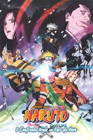

"Naruto" começou a ser exibido em 3 de outubro de 2002, na TV Tokyo, e era uma adaptação do mangá lançado em setembro de 1999. A obra de Masashi Kishimoto teve um total de 72 volumes e durou até novembro de 2014, tendo vendido mais de 220 milhões de cópias em todo o mundo.Naruto é um jovem órfão habitante da Vila da Folha que sonha se tornar o quinto Hokage, o maior guerreiro e governante da vila. Ao se graduar como ninja, descobre que tem um demônio raposa selado dentro de si. Seu pai, o quarto Hokage, aprisionou a raposa no próprio filho quando a raposa ameaçava destruir a Vila da Folha, sacrificando assim a própria vida. Agora Naruto vai contar com a ajuda dos colegas Sakura e Sasuke e do professor dos três, Kakashi Hatake, para perseguir seu sonho e deter os ninjas que planejam fazer mal á sua cidade.

Nos games da Bandai Namco, a história de Naruto é longa, com muitas adaptações, variando de histórias originais a enredos que pegam emprestado elementos do seriado.
Nos games da Bandai Namco, a história de Naruto é longa, com muitas adaptações, variando de histórias originais a enredos que pegam emprestado elementos do seriado.

As adaptações em animê, Naruto (2002), Naruto Shippuden (2007) e Boruto: Naruto Next Generations (2017) são exibidas oficialmente no Brasil via streaming pela Crunchyroll, com legendas em português. A série original e parte de Shippuden também podem ser encontradas na Netflix, com opção de dublagem em português. Quando se trata de filmes, a franquia vem recebendo histórias adicionais desde sua fase clássica. Ao todo, são 10 títulos que expandem as aventuras, seja explorando tramas paralelas ou levando a história do protagonista adiante. Filmes: Confronto Ninja no País da Neve (2004), Legend of the Stone of Gelel (2005), Guardians of the Crescent Moon Kingdom (2006), Naruto Shippuden The Movie (2007), Naruto Shippuden The Movie: Bonds (2008), Naruto Shippuden The Movie: The Will of Fire (2009), Naruto Shippuden The Movie: The Lost Tower (2010), Naruto The Movie: Blood Prison (2011), Road to Ninja: Narujo The Movie (2012) e The Last - Naruto, o Filme (2014).